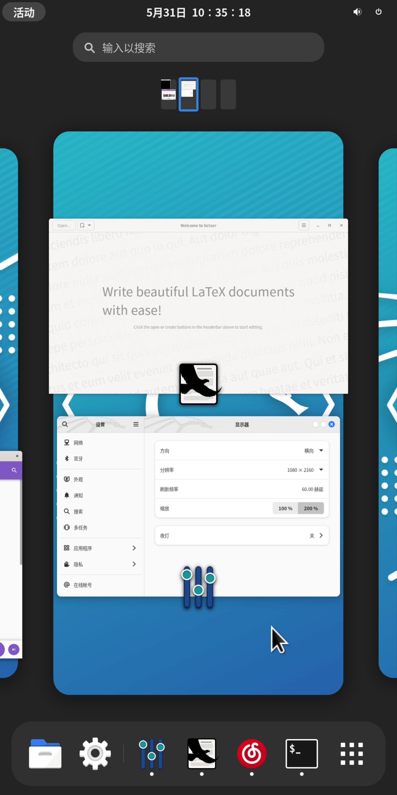

序章
中文 | English
下文将用“本书”来代指“本手册”。
声明
对于普通用户来说，本项目自身没有任何价值。
本书亦是如此。
这里没有轻小说中“剑与魔法”的奇幻异世界冒险历程, 更没有《诗经》中“堕山乔岳，允犹翕河”般辽阔壮美的风景。
有的只是无聊透顶的内容。
对于非普通用户来说，它的价值主要取决于使用场景。
在本章的“使用场景”中，我们将简单介绍相关内容。
若在同一场景下，存在更优的替代品，那么您不妨敞开胸怀，给本项目多提几个 issues。
或许有一天，世界会变得更加美好呢！
除了 android 外，对于某些功能或工具，本项目的开发者若未将其打成包（例如 deb 包），并且未在本书中对其进行详细解析，那么只建议您在容器中使用。
对于 android, 请翻阅 “容器/android”。
old-version 的内容会被新版所替代，新版将会放在 dev 分支。
Trust us. 未来会更好的!
如何阅读这本书
在阅读本书时，您需要了解的内容。
本页面由 mdbook 生成。
- 左上角的三条杠 "≡"
- 点击三条杠打开目录
- 页面最下方的评论区
- 您可以使用 github 帐号登录，您发表的内容将与 "github discussions" 保持同步。
- 同理，如果您在 discussions 中找到当前章节的讨论页面，并在里面发表内容，那么相关内容也会同步到下方的评论区。
- 左上角的画笔 "🖌️"
- 先点击画笔，再选择主题，最后完成切换
- 左下角的 "<" 符号
- 点击 "<" 跳转到上一页
- 右下角的 ">" 符号
- 点击 ">" 跳转到下一页
如果您的网页（屏幕）显示空间足够宽，那么"<" 和 ">" 将位于中间，而不是下方。
使用场景
本项目存在的意义:
- 在合适的场景下，您使用本项目去做一些有趣或有意义的事情。
对您来说有意义的事情，对本项目而言，亦是如此。
You can do something interesting or meaningful.
有意义与否
有意义与否并非如 bool 类型那般非 true 即 false。
它是相对的，而非绝对。
在这里我们并不想深入去探求哲学问题，简而言之，这个问题的答案因人而异，没有绝对的标准。
问题：什么是意义不大的事情呢？
假设存在以下两个场景：
- 1.您在 arm64 设备上模拟 x64 环境，然后在上面打！游！戏！
- 2.您在 arm64 设备上远程连接到 x64 windows 设备，然后运行 windows x64 平台的游戏。
前者花了一小时，而后者花了五分钟。
主观回答 1： 前者可能是有趣的，但是意义相较于后者而言，可能没有那么大。
时间是很宝贵的，我希望大家能把时间花在更有意义的事情上，而不是浪费时间。
主观回答 2： 我既没有电脑，也租不起 x64 虚拟专用服务器，更玩不起云游戏，在手机上体验 windows 游戏让我感受到了快乐，我认为这是值得的，并且是有意义的。
在下文中，我们将会假设几个场景，您可以对其进行评价，判断其是否有意义。
android 、图书馆与 LaTex
- 地点：图书馆
- 设备：android 手机/平板 (无 root)
- 条件：无网络，或网络状态不佳 (网速很慢)

- 描述：您在图书馆里，带着 android 手机/平板，在离线环境下，运行 gnome + LaTex 环境（texlive-full） + LaTex 编辑器，在上面用 LaTex 编辑器写文章/排版。
iOS、旅馆与 manjaro+goland
- 地点：旅馆、酒店、餐厅、银行或电信营业厅（等网络良好的场所）
- 设备：iPhone/iPad (或其他带有浏览器的设备)
- 条件：网络环境优秀（至少要良好）
- 描述：您出门在外，只带了 ios 设备。可是您做梦都想要用
idea,clion和goland。
github 的 codespace (在线版 vscode) 可以运行不同的环境，于是您将 tmoe 的 gui 容器直接作为 codespace 的 devcontainer。 在上面跑 gui (xfce), 再跑 goland。
在 vscode 上跑 jetbrains goland, 这何尝不是一种 PV 呢？关于 PV 的说明，详见本章的“题外话”。
- 教程：
- 说明：
- 截至 2022-06-15, github 官方并没有提供基于 manjaro 的 xfce 环境（容器镜像）。
- 尽管 github 的 codespace （vscode）插件自带了生成配置的功能，但是之后本项目开发者可能会写个类似功能的小工具。从而让大家更省心一点。
- 准备：
- 您拥有一个支持 codespace 的 github 账号
- 若显示区域不够宽，则您可能需要将浏览器（如 safari）切换为桌面版网站（视图）
- 开始：
- 成功连接到 codespace 后，打开 vscode 内置终端，并在项目目录下执行以下操作
- 说明：
mkdir -p .devcontainer
cd .devcontainer
cat >devcontainer.json<<-'EOFJSON'
// For format details, see https://aka.ms/devcontainer.json.
{
"name": "Manjaro",
"dockerFile": "Dockerfile",
"runArgs": [
"--cap-add=SYS_PTRACE",
"--security-opt",
"seccomp=unconfined"
],
// "mounts": [
// "source=dind-var-lib-docker,target=/var/lib/docker,type=volume"
// ],
"mounts": [
"source=/var/run/docker.sock,target=/var/run/docker.sock,type=bind"
],
"overrideCommand": false,
// Configure tool-specific properties.
"customizations": {
// Configure properties specific to VS Code.
"vscode": {
// Add the IDs of extensions you want installed when the container is created.
"extensions": [
// "MS-CEINTL.vscode-language-pack-zh-hans",
"ms-azuretools.vscode-docker"
]
}
},
// Use 'forwardPorts' to make a list of ports inside the container available locally.
"forwardPorts": [
5902
],
// Use 'postCreateCommand' to run commands after the container is created.
// "postCreateCommand": "docker --version",
// Comment out to connect as root instead. More info: https://aka.ms/vscode-remote/containers/non-root.
// "build": {
// "args": {
// "ENABLE_NONROOT_DOCKER": "false"
// }
// },
"remoteUser": "ddk"
}
EOFJSON
cat > Dockerfile<<-'EOFDKF'
# syntax=docker/dockerfile:1
#---------------------------
# FROM cake233/manjaro-zsh-amd64
FROM cake233/manjaro-xfce-amd64
# set username & group
ARG USERNAME=ddk
ARG GROUPNAME=ddk
# ARG USER_UID=1001
# ARG USER_GID=$USER_UID
# rm cn mirrorlist
RUN sed -e '/bfsu.edu.cn/d' \
-e '/tuna.tsinghua.edu.cn/d' \
-e '/opentuna.cn/d' \
-i /etc/pacman.conf
# install dependencies
# live server: https://docs.microsoft.com/en-us/visualstudio/liveshare/reference/linux#install-linux-prerequisites
RUN pacman -Syu \
--noconfirm \
--needed \
base \
base-devel \
git \
lib32-gcc-libs \
lib32-glibc \
gcr \
liburcu \
openssl-1.0 \
krb5 \
icu \
zlib \
gnome-keyring \
libsecret \
desktop-file-utils \
xorg-xprop \
xdg-utils
# locale: Chinese Simplified (China)
ENV LANG=zh_CN.UTF-8
# add new user
RUN groupadd --force ${GROUPNAME} \
&& useradd --create-home --gid ${GROUPNAME} ${USERNAME} \
&& mkdir -p /etc/sudoers.d \
&& echo "${USERNAME} ALL=(ALL) NOPASSWD:ALL" > /etc/sudoers.d/ddk \
&& chmod 400 /etc/sudoers.d/ddk
WORKDIR ["/home/$USERNAME"]
# clean cache
RUN yes | pacman -Scc; \
rm -rf /var/cache/pacman/pkg/* \
/tmp/* \
2>/dev/null
# command: sleep infinity
CMD [ "sleep", "inf" ]
EOFDKF
rebuild：
- 1.按下 F1 或 Ctrl+Shift+P 或 cmd+shift+p
- 2.搜索 rebuild
- 3.选择 Codespaces: Rebuild container
您也可以手动选择“远程资源管理器”，再选择 Codespace, 最后点击 rebuild container 的 图标。
ddk可以修改为其他用户名。 关于上述命名的来源，详见“题外话”
关于 vnc
进入了 codespace 环境后，在内置终端里执行以下操作
- 运行
tmoe - 先选择语言环境，再选择 tools
- 接着选 software， 然后选 dev
- 安装 goland, clion 或其他 IDEs
- 退出 tools
由于此容器镜像已经预装了 xfce, 因此您无需重复安装。
对于网页连接的 codespace:
- 运行
novnc，设置密码 - 打开端口转发处的
36080对应的 local address
对于本地 vscode 连接的 codespace：
- 运行
startvnc - 打开 vnc 客户端，输入本地 vnc 地址(默认是 127.0.0.1:5902)。
其他场景
序章中描述的内容是有限的，更多内容分布于本书的其他章节。
对于其他场景，例如：您想要使用 github actions 来编译不同架构的软件，那么可以去看看 “容器/docker”。
题外话
注意：
题外话对您来说，可能是没有意义的，甚至有可能会引起您的反感。
开发者建议您打开目录，并跳转至其他章节。
Q: 为什么是 ddk
A: 有个叫 ddk 的用户，给本项目提了个与 codespace 相关的 issue, 于是他就“青史留名”了。
(￣ ▽ ￣)
其实非本项目相关的 Issue 发在 discussions 里会更好。
Q: 什么是 PV
A: 这是理想气体状态方程。
PV=nTR
- 解析：
- P: 压强
- V: 气体体积
- n: 物质的量
- T: 热力学温度
- R: 气体常数
您可能不知道的冷知识：
2moe 之前在某个漫画网站上，看到过一本漫画，它的标题是 《wopd ybww bwpy qmbw PV levl, soyi yeyc PV qmbwde nvpgyz》
哎呀，这孩子物理应该学得还不错吧！
这只是标题吸引人而已，好孩子不要去看。